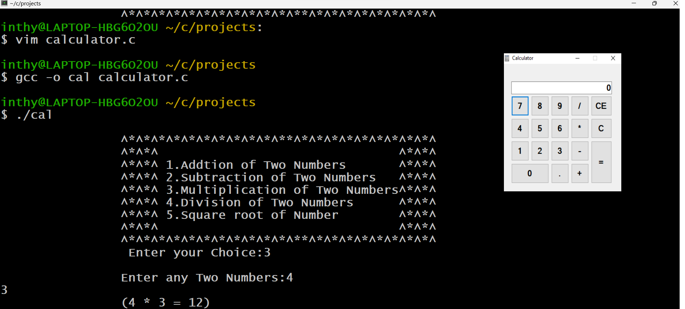

Mini Calculator

Project Overview: Mini Calculator
Introduction:
A Calculator is a small electronic device used to perform various arithmetic operations like addition, subtraction,
multiplication, division, percentage, etc. It makes our calculations easier and faster.
Let's discuss the way to
create a calculator program in the C language.
Algorithm of Calculator:
Step 1 : import the required header files into the code. Here we use stdio, stdlib.
Step 2 : Declare the functions.
Step 3 : Declare local variables x, y side. For example, where x and y take two
numeric values.add, sub, mul, div, area are used to store the results.
Step 4 : Display the Menu by calling menu function (Addition, Subtraction, multiplication, division, square)
etc.
Step 5 : Take the input from users and. Here the results are going to be stored in it.
Step 6 : Finaly call the functions to processes the given probelm and it returns the Results.
Step 7 : Exit the Application
Conclusion:
A calculator program in C is a software application that allows users to perform basic
arithmetic calculations, such as addition, subtraction, multiplication, and division, using the C programming
language.The concepts are user input, control flow, looping statements, Arithmetic operations, Function
implementation. You can also check the code below.
To Know Source Code
Click Here
Copyright © 2024 Mr Abdul| Powered by Mr Abdul.